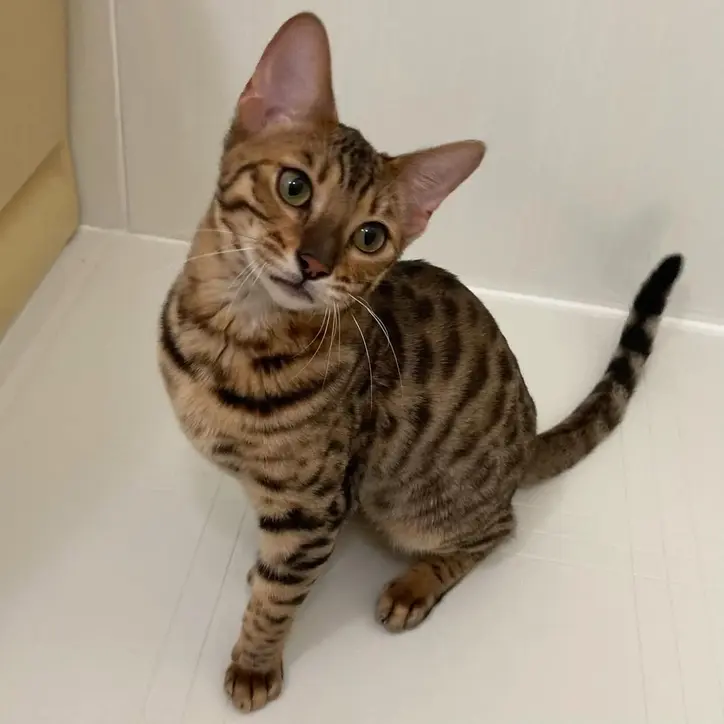

Available Toyger Kittens
Toyger Kitten For Sale | Toyger Cat For Sale
Our beautiful Toyger kittens for sale are raised with love and care in our home. Each has their own unique personality and is ready to become part of your family.

Leo
AvailableLeo has exceptional contrast markings with bold, dark stripes on a bright orange background. He's playful, confident, and loves to be the center of attention.
$1,500
Inquire Now

Luna🌺
AvailableLuna is a sweet and curious Toyger kitten with beautiful markings and a gentle temperament. Fully vaccinated and health checked.
$1,500
Inquire Now
Bella🌼
ReservedMeet Bella, a playful and curious little girl. She loves to explore and is very social with humans. She's been hand-raised since birth and is well-socialized.
$1,500
Reserved